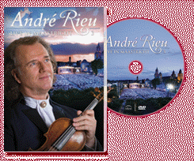

|
Live in Maastricht III (2009) - 130
Minutes
|
 |
| André is back home in
Maastricht! He is returning to the Vrijthof
Square for a traditional summer evening concert
in his home town. Enjoy the unique performances
by André’s soloists Carmen, Carla and Mirusia
and the Platinum Tenors. Party with the crowd as
special guest Heino performs. And as if that
were not enough, you’ll definitely be getting
goose pimples when you hear the spectacular,
unforgettable playing of no less than 450 brass
players! |
Where to buy?
|
|
DVD Tracklist
- Seventy-Six Trombones
- Light Cavalry
- Cielito Lindo, ARV_09
- Ob blond, ob braun
- Non Ti Scordar Di Me
- Old Comrades, ARV_09
- Pini Di Roma
- Gloria All'Egitto, Ad Iside
- Nearer My God To Thee
- Parade Of The Charioteers
- Panis Angelicus
- Limburg Anthem, ARV_09
- Slavko, spiel uns eins!
- Happy Birthday
- Song Of Olympia
- Ben
- Earth Song
- Colonel Bogey
- Con Te Partirò (Time To Say Goodbye)
- The Beautiful Blue Danube
- Ode To Joy
- Radetzky March
- Strauss & Co.
- Adieu, Little Captain Of My Heart
- So ein schöner Tag (Fliegerlied)
- Sierra Madre
- Beer Barrel Polka (Rosamunde)
- Blau blüht der Enzian
- Maastricht Anthem, ARV_09
- Maastricht, City Of Jolly People
- Brasil Symphony
- You'll Never Walk Alone
|
|